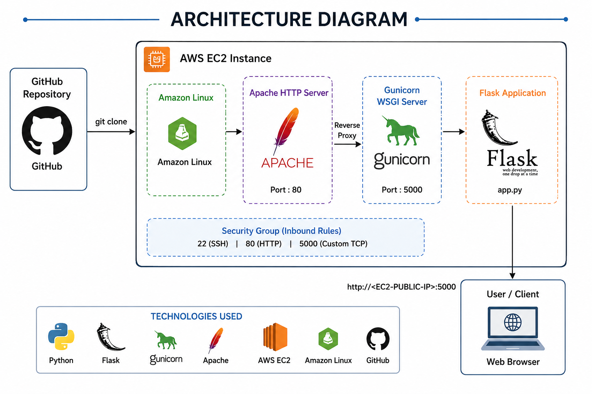

Python-App Deployment is a web-based application developed using Python, where the application runs using a built-in server and can also be deployed using Gunicorn for production-level performance.
Project objective:
Launching and configuring AWS EC2 instances Hosting Python web applications on Linux servers Managing Python virtual environments Installing and configuring Apache HTTP Server Running Flask applications using Gunicorn WSGI server Configuring security groups and networking Using GitHub for source code management

⚙️ Technologies Used
🐍 Python 3
🌐 Flask
🔫 Gunicorn
☁️ AWS EC2
🔧 Apache HTTP Server
🐧 Amazon Linux
🗂️ Git & GitHub📂 Project Structure
pythonapp/
│
├── app.py
├── requirements.txt
Name : Python
OS : Amazon Linux

AMI : Default
Architecture : Default
Instance Type : t3.micro (2CPU & 1GB Memory)

Key : Pratik-Virginia-Key (Exiting One)
Security Group : Launch-Wizard-2 (Exiting One)


ssh -i Pratik-Virginia-Key.pem ec2-user@54.161.38.170sudo yum updatesudo yum install git -y
git clone https://github.com/iamtruptimane/pythonappsudo yum install python3 -y
sudo yum install python3-pip -ygit --versio
python --version
pip --version
cd / pythonapp;
sudo python3 -m venv myenv
sudo bash myenv/bin/activatesudo pip install -r requirements.txtpython3 app.py
If Press Ctrl + C → App Stopsgunicorn --bind 0.0.0.0:5000 app:app --daemon


public ip:5000

# 🔥 Key Learnings
- AWS EC2 setup
- Linux server management
- Python virtual environments
- Flask application deployment
- Gunicorn configuration
- Apache server basics
- GitHub integrationIt Enables Users To Access The Application Through A Public IP On Port 5000, Demonstrating Basic Cloud Deployment And Application Hosting In A Structured Environment.